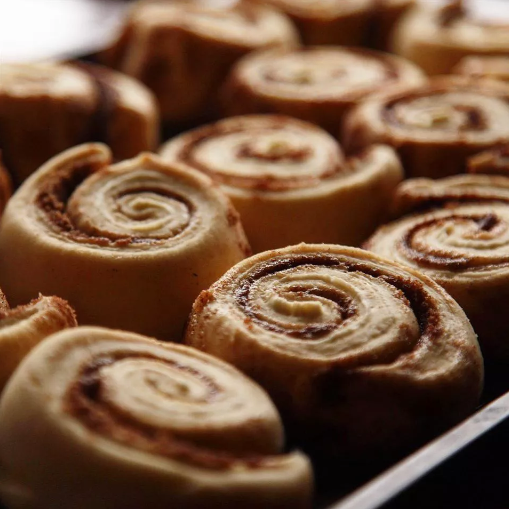

Cinnamon Roll

Description
Delicious crispy shrimp coated in a bread crumb-Parmesan mixture. My family can't get enough of it!
I would suggest doubling the recipe if you have very large eaters because this is addictive! Serve with pasta and salad.
Ingredients
- ¼ cup water at room temperature
- ¼ cup butter, melted
- ½ (3.4 ounce) package instant vanilla pudding mix
- 1 cup warm milk
- 1 egg, room temperature
- 1 tablespoon white sugar
- ½ teaspoon salt
- 4 cups bread flour
- 1 (.25 ounce) package active dry yeast
- ½ cup butter, softened
- 1 cup brown sugar
- 4 teaspoons ground cinnamon
- ¾ cup chopped pecans (Optional)
- 1 (4 ounce) package cream cheese, softened
- ¼ cup butter, softened
- cup confectioners' sugar
- ½ teaspoon vanilla extract
- 1 ½ teaspoons milk
Steps
- In the pan of your bread machine, combine water, 1/4 cup melted butter, vanilla pudding, 1 cup warm milk, egg, 1 tablespoon sugar, salt, bread flour, and yeast. Set machine to Dough cycle; press Start.
- When Dough cycle has finished, turn dough out onto a lightly floured surface and roll into a 17x10 inch rectangle. Spread with 1/2 cup softened butter. In a small bowl, stir together brown sugar, cinnamon, and pecans. Sprinkle brown sugar mixture over dough.
- Butter a 9x13-inch baking pan.
- Roll up dough, beginning with long side. Slice into 16 one-inch slices; place in prepared pan. Let rolls rise in a warm place until doubled, about 45 minutes.
- Preheat oven to 350 degrees F (175 degrees C).
- Bake rolls in preheated oven until browned, 15 to 20 minutes.
- Stir together cream cheese, 1/4 cup softened butter, confectioners' sugar, vanilla extract, and 1 1/2 teaspoons milk. Remove rolls from oven and let cool until warm; spread frosting over warm rolls.
Return to Home Page